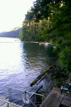

This will be the main body of my website, where I explain how this part of my life was so special. I will describe why this was one of my favorite places.

What does Lake Cushman offer?
Beautiful scenery
Fun family activities
Relaxing atmosphere
Want to learn more about Lake Cushman? Go here: Lake Cushman